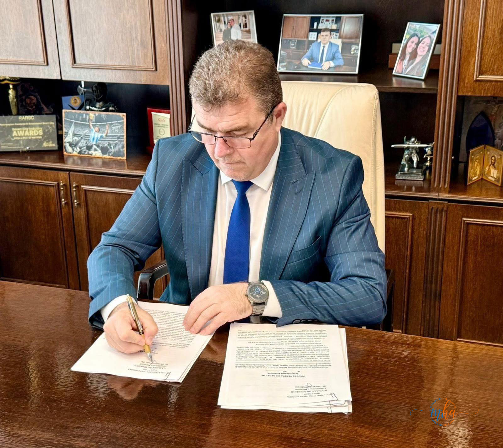
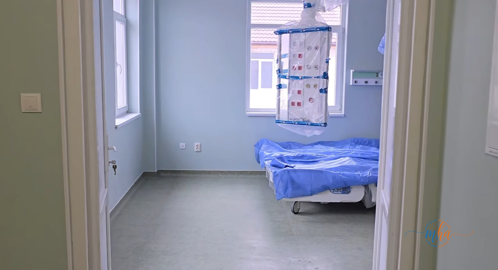
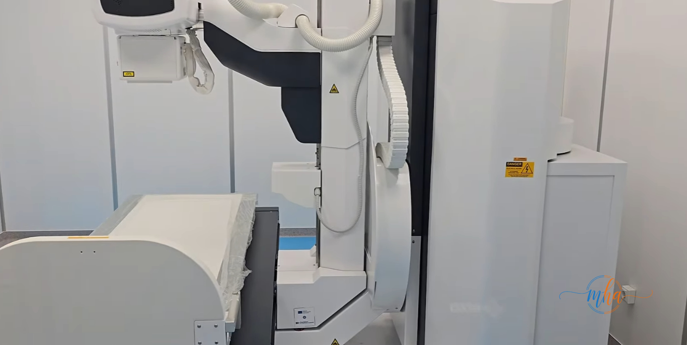
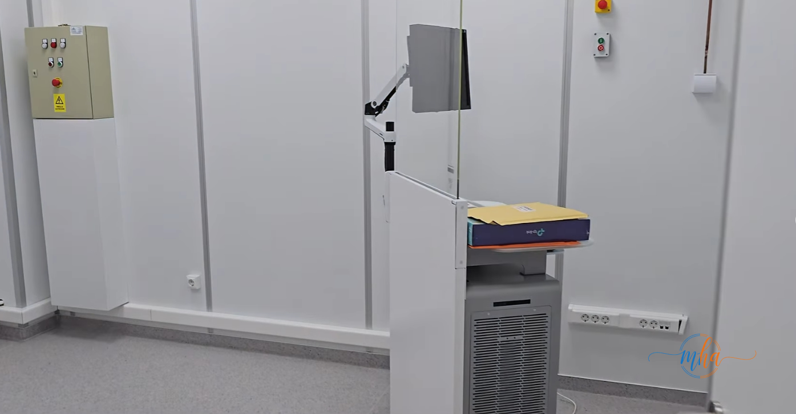
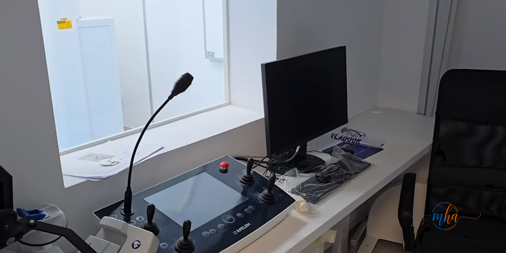

🏥 SPITAL VÂNJU MARE — Date cheie
- Regim înălțime: P+E1+E2
- Paturi spitalizare continuă: 71
- Paturi spitalizare de zi: 3
- Finanțare: fonduri guvernamentale + județene + europene
- Status: proces-verbal de terminare semnat — 22 mai 2026
Un moment important pentru sănătatea publică din sudul județului Mehedinți: a fost semnat procesul-verbal de terminare a lucrărilor pentru proiectul „Reabilitare, extindere și modernizare Spital Orășenesc Vânju Mare, organizat ca secție exterioară a Spitalului Județean de Urgență Drobeta Turnu Severin".

Foto: Semnarea procesului-verbal de terminare a lucrărilor
Această investiție majoră reprezintă un efort comun, realizat prin fonduri guvernamentale pentru infrastructura imobilului, fonduri de la bugetul județului și fonduri europene destinate dotării cu aparatură medicală performantă. Rezultatul: o unitate medicală adusă la standarde înalte de calitate, în acord cu normele europene — atât sanitare, cât și de urgențe.
Ce secții și compartimente va avea spitalul modernizat
Spitalul Orășenesc Vânju Mare, cu regim de înălțime P+E1+E2, dispune acum de 71 de paturi pentru spitalizare continuă și 3 paturi pentru spitalizare de zi. În cadrul unității vor funcționa:
🩹 Compartimente și secții funcționale
- Pediatrie
- Primiri Urgențe (UPU)
- Chirurgie Generală — cu sală de operații și ATI
- Ginecologie — cu sală de nașteri și sală pentru cezariene
- Neonatologie / Obstetrică
- Medicină Internă
- Laborator de analize medicale
- Radiologie
Practic, spitalul acoperă acum toate nevoile medicale de bază ale comunității din Vânju Mare și din comunele arondate, eliminând necesitatea deplasării la Drobeta-Turnu Severin pentru consultații și internări de rutină.

Foto: Salon modernizat cu instalații noi și pat medical
Lucrări complexe de reabilitare — de la structură la instalații
Modernizarea spitalului a implicat lucrări complexe de consolidare structurală și recompartimentare completă a spațiilor interioare. Fiecare salon beneficiază acum de baie proprie și instalații sanitare noi — un standard de confort și igienă esențial în mediul spitalicesc.
Au fost realizate instalații electrice moderne, instalații de gaze medicale și un sistem performant de climatizare care asigură temperatura optimă indiferent de anotimp. Pentru încălzire, a fost executată o instalație de stocare și distribuție a gazului petrolier lichefiat pentru alimentarea centralelor termice.
Curtea spitalului — parcare, trotuare, spații verzi și iluminat
Lucrările au vizat și amenajarea și sistematizarea completă a curții spitalului. Au fost realizate drumuri interioare, 28 de locuri de parcare — dintre care 3 rezervate persoanelor cu dizabilități — trotuare, spații verzi, sistem de colectare a apelor pluviale și iluminat exterior modern.

Aparat radiologic RX

Camera radiologie cu protecție plumb
Aparatură medicală performantă, cu fonduri europene
Componenta europeană a proiectului a finanțat dotarea spitalului cu echipamente medicale de ultimă generație:
🔬 Aparatură medicală nouă
- Aparat radiologic cu grafie și scopie RX
- Mamograf cu tomosinteză — diagnostic avansat pentru cancer mamar
- Ecograf Doppler color
- Ecograf Doppler pentru pediatrie
- Ecograf multidisciplinar pentru abdomen
- Ecograf performant pentru obstetrică
Pentru instalarea echipamentelor radiologice au fost amenajate spații speciale cu protecție din plumb, conform normelor europene de radioprotecție.

Foto: Consola de comandă a aparaturii radiologice
„Cu acest obiectiv finalizat facem încă un pas important în modernizarea infrastructurii de sănătate din județul Mehedinți!"
Mulțumiri au fost adresate fostului ministru al Sănătății, Alexandru Rogobete, pentru sprijinul acordat proiectului, precum și doamnei Daniela Drăghia din cadrul Direcției Tehnic-Investiții a Consiliului Județean Mehedinți, care a coordonat implementarea.
Finalizarea Spitalului Orășenesc Vânju Mare reprezintă un câștig real pentru zeci de mii de locuitori din zona de sud a județului Mehedinți, care vor beneficia de servicii medicale moderne, fără să fie nevoiți să parcurgă distanțe mari pentru îngrijire medicală.
Sursa: Consiliul Județean Mehedinți / Redactia MehedintiAzi.ro